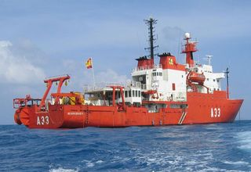
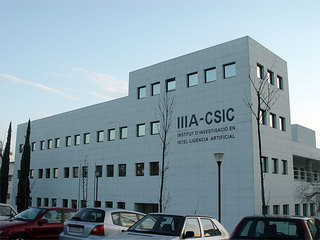
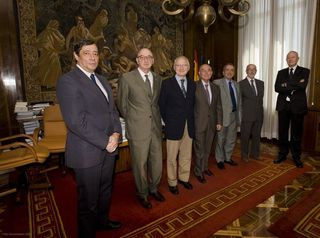
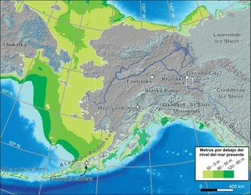

Charlando sobre la ciencia española y otras cosillas con el presidente del CSIC (entrevista)
Wed, 12 Oct 2011 10:28:06 +0000
Entrevista exclusiva de la Pizarra de Yuri a Rafael Rodrigo, Presidente del Consejo Superior de Investigaciones Científicas.
“[...] uno sólo tiene que fijarse en [...] qué situación están los países que han apostado por la ciencia desde siempre, y en cuál están los que no. La ciencia se traduce en progreso. Nada de lo que tenemos ahora se ha producido sin un avance científico, sin un avance del conocimiento. [...] Una sociedad de progreso significa también una sociedad más igualitaria, y la ciencia ayuda a eso. Si perdemos eso, pues estamos simplemente dejando el progreso y toda la sociedad en manos de otros. Nuestro destino estará en manos de otros. [...]“
–Rafael Rodrigo, presidente del Consejo Superior de Investigaciones Científicas.
Para mí, hablar de ciencia en España tiene siempre un regusto agridulce. Tengo la sensación de asistir eternamente a la historia de lo que pudo ser y no fue. Y, como ya supondrás, sustento la opinión de que una parte significativa de nuestro atraso secular y nuestros problemas actuales está estrechísimamente emparentada con la falta de ciencia en España, y de todo lo que acompaña a la ciencia y la Razón Ilustrada. Según veo yo las cosas, el “¡que inventen ellos!” ha sido tan malo como el “¡vivan las cadenas!”, y entre ambos explican una parte notable de por qué estamos como estamos. Y, me temo, estaremos. Una maldición que también sufren, en buena medida, nuestros hermanos de Latinoamérica.
Rafael Rodrigo, astrofísico y presidente del Consejo Superior de Investigaciones Científicas.
Por eso, siempre me agrada conversar con personas que saben mucha más ciencia que yo y que además están en los lugares donde se mueven las cosas. Si encima tienen una visión más optimista, ni te cuento. Este es el caso del doctor Rafael Rodrigo, astrofísico y presidente del Consejo Superior de Investigaciones Científicas, que ha tenido la amabilidad de pararse a conversar con la Pizarra de Yuri sobre la ciencia española y todo lo que le quise plantear. Considéralo mi manera de celebrar la Fiesta Nacional.
Rafael nació en Granada en 1953, es licenciado en matemáticas, doctor en física e investigador en astrofísica. Vinculado al CSIC desde 1975, ha sido premiado por sus colaboraciones en la NASA y la Agencia Espacial Europea. Fue coordinador del Área Científico-Técnica de Física y Tecnologías Físicas del CSIC, gestor del Programa Nacional del Espacio y de Astronomía y Astrofísica, vicepresidente de Organización y Relaciones Institucionales del organismo y en 2008 llegó a la presidencia, que viene ejerciendo desde entonces.
Oye, Rafael, ¿cómo es el día a día de un presidente del Consejo Superior de Investigaciones Científicas, que suena así como muy rimbombante?
(Ríe) El día suele ser largo. Largo y cargado. Si estoy en el despacho, continuamente hay visitas o reuniones de trabajo; y si estoy fuera, es todavía peor y cuando vuelvo todavía se ha acumulado más trabajo.
Pero también es muy variado. El Consejo es una institución multidisciplinar, y no sólo por las disciplinas científicas sino también por las relaciones con los distintos estamentos sociales. Eso significa que lo mismo a las diez de la mañana estás hablando con alguien de microelectrónica, como pasas a un tema de filosofía media hora más tarde, o de relación con la comunidad autónoma una hora más tarde… Eso agota mucho pero, afortunadamente, tengo un buen equipo de trabajo alrededor y eso es lo que te permite afrontar los días. Si no, sería imposible.
Tú entraste de presidente del CSIC en 2008, hace ya más de tres años. ¿Qué te proponías al acceder a la presidencia?
Bueno, yo venía antes de la vicepresidencia, con lo que ya conocía la dirección del CSIC. El trabajo de un vicepresidente es distinto del de un presidente, pero la propuesta que teníamos en aquel momento era hacer una transformación de la figura de organismo autónomo a la figura de agencia estatal. Y eso es lo que hemos hecho en la estructura de la organización del CSIC en estos años.
La verdad es que estos años han coincidido con los de la crisis económica, han sido años duros, y eso significa que no hemos podido llevar esa transformación hasta los últimos niveles. En realidad lo que queríamos era ganar más agilidad y más competencia, porque la investigación no puede estar sometida a un corsé estricto de la Administración General del Estado, sino que tiene que ser un poco más ágil.
Para los que nos perdemos un poco en cuestiones institucionales, ¿cuál es la diferencia entre un organismo y una agencia estatal?

El buque de investigaciones oceanográficas Hespérides, operado por la Armada Española y el Consejo Superior de Investigaciones Científicas (Clic para ampliar)
La agencia estatal supone en principio que podías tener más autonomía, más flexibilidad, más agilidad en la gestión. Digamos que además tienes más autonomía política, en cierto sentido, y más autonomía de gestión. Y te gestionas de una manera diferente, por cumplimiento de objetivos y un poco más parecido a una empresa que a un organismo público normal. Seguimos siendo un organismo público de investigación, pero con un estatuto y un estatus diferente.
¿Hemos conseguido todo eso? ¡Pues no! Pero hemos colocado al CSIC en una posición diferente, dispuesta a seguir la carrera para conseguir todo lo que permite nuestro estatuto y la ley de agencias estatales, que en definitiva es autonomía en gestión y flexibilidad en la misma.
A mí, a los que dirigís este tipo de instituciones, me gusta preguntaros… imagínate, Rafael, que mágicamente te aparecen mil millones en el presupuesto. ¿Qué sería lo primero que harías?
¡Tengo que echarle mucha imaginación…! No habría que gastarlos alocadamente. Tenemos un plan estratégico a cuatro años, eso es parte de ser una agencia estatal; los demás organismos no suelen tener un plan estratégico a medio o largo plazo. Y evidentemente tenemos programada una serie de actividades, algunas de las cuales no hemos podido realizar por falta de fondos económicos.
Así pues, tendríamos que utilizarlos en esa estrategia que tenemos diseñada. Pero dentro de esa estrategia, hay dos puntos siempre fundamentales: uno es los recursos humanos y otro las infraestructuras o equipamientos. Los dos tienen que ir de la mano para que una institución pueda ser fuerte y apoyar a sus investigadores, de tal modo que puedan ser muy competitivos. Los investigadores pueden ser muy competitivos pero si no tienen el equipamiento y las plataformas tecnológicas correctas, perderán competitividad con el tiempo.
Gran parte de ese dinero debería dedicarse a elevar el nivel de excelencia en el equipamiento. Pero el equipamiento sin personas es inútil; por lo tanto, también tendríamos que recuperar al personal ya formado, y ser capaces de atraer talento internacional que se incorporara a nuestros grupos de investigación.
O sea que las dos cosas que haría, y no de forma inmediata sino bien pensadas y analizadas en nuestro plan estratégico, sería en recursos humanos y equipamiento.
Manifestación de jóvenes investigadores cientificos en 2009. Foto: Gabriel Pecot / Público.
Hablando de esto… tú sabes que toda la juventud investigadora española se queja amargamente, y esto no viene de la crisis sino ya de mucho antes, de la extrema precariedad en la que trabajan. Muchos de ellos se van al extranjero en busca de pastos más verdes, y esto ya era así en la época de las vacas gordas. ¿Por qué?
Vamos a ver, yo creo que hay que distinguir. El hecho de irse al extranjero no es un “castigo”, es parte de la formación de un investigador joven. Cuando uno termina su tesis doctoral en un instituto de investigación o en un grupo, lo importante para él no es seguir bajo las alas o el cobijo del mismo grupo o instituto que le ha ayudado a conseguir la tesis doctoral; sino empezar una carrera un poco más independiente. Eso significa que debe salir de ese amparo, a otros institutos de investigación. Normalmente esto se hace en el extranjero, aunque se puede ir a otros institutos de España porque ya los hay tan buenos como fuera. Eso es parte del proceso de formación.
El problema viene muchas veces en el vacío existente entre que acabas la tesis y consigues un contrato fuera. Ese vacío es el que conlleva la precariedad, básicamente.
Existe otro problema. Dependiendo de tu disciplina, la formación no acaba cuando acabas la tesis sino que hay que seguir formándose de manera muy especializada. Eso puede durar algunos años en los que estás fuera, y uno espera que después uno pueda tener alternativas en su propio país, para poder volver. Pero nuestro sistema no es tan rico. Entonces, la vuelta se complica más.
Muchos años hemos sido capaces no sólo de recuperar a esta gente que estaba formándose fuera, sino de incorporar a nuevos talentos que nunca habían tenido nada que ver con nuestra institución, fueran españoles o de otras nacionalidades. Pero eso exige recursos económicos. Sin ellos, tu capacidad de incorporación o reincorporación disminuye.
Desde siempre, la carrera científica ha sido una carrera de obstáculos. Pero debería ser una carrera de obstáculos científicos, no burocráticos o de conseguir contratos. Por eso esta carrera siempre se ha considerado tremendamente difícil: no sólo por lo competitiva que es sino por los obstáculos adicionales que el sistema le pone.
Mira, Rafael, yo soy muy crítico con el estado de la ciencia española. Soy consciente de que se han hecho avances, pero… ¿por qué nadie ha conseguido que la ciencia española despunte en el mundo?
En ciencia no se puede despuntar en todas las disciplinas, nadie es bueno en todo. Yo creo que la ciencia española sí tiene ahora mismo nichos donde se está a muy alto nivel. Aunque, entre otras cosas, despunta y está a muy alto nivel pero luego hay que mantenerlo; y ese es un problema de este país, que no se mantienen normalmente unas inversiones y una confianza en la ciencia durante mucho tiempo, de manera continuada.

El Instituto de Investigación en Inteligencia Artificial de la Universidad Autónoma de Barcelona, perteneciente al CSIC. (Clic para ampliar)
Eso no pasa en otros países. También es verdad que no tenemos mucha tradición. ¿Cuántos años tenemos de tradición científica moderna en España… podemos decir treinta, e incluso es exagerar un poco? Comparado con los siglos que llevan otros países de nuestro entorno, hace que nos cueste un poco más de trabajo. Pero, sin embargo, estamos en la línea. Yo creo que se está en el mismo tren. A lo mejor no en el primer vagón en todas las disciplinas, pero sí a un buen nivel.
De hecho, yo suelo decir que la sociedad no conoce que estamos a tan buen nivel en algunas disciplinas. Pero, ahora mismo…
Alégrame el día: ponme algunos ejemplos.
Pues mira, yo creo que en ingeniería química se está a un altísimo nivel, y también en inmunología. En física de altas energías se está a un magnífico nivel, y en ciencias del espacio, astrofísica. Se es plenamente competitivo, se compite con los mejores del mundo.
No sólo eso: los mejores del mundo compiten con nosotros. Nuestros laboratorios están atrayendo entre un 30 y un 40% de talentos europeos: alemanes, franceses, italianos, ingleses… yo creo que estamos siendo un foco de atención.
Si eso no se mantiene económicamente, pues está claro que es muy difícil llegar arriba y muy fácil bajar rápidamente. Y España no se ha caracterizado por mantener su inversión en ciencia, por lo que no llega todavía al nivel de los países con los que queremos competir, con los que estamos compitiendo. Entonces, esto se hace muy difícil.
El hecho de que España haya llegado a ser la novena potencia científica en número de publicaciones, y también en calidad en algunas disciplinas, demuestra que ha habido un esfuerzo no sólo por parte del gobierno y de la sociedad española, sino también por parte de los científicos.
No somos los mejores en todo, pero somos muy buenos en muchas cosas.
El otro día, un chaval de diez años me preguntó: “¿Por qué no hay naves espaciales españolas?”
(Ríe) Vamos a ver, pero es que tampoco hay inglesas o… hay muy poquitas [naciones capaces de hacer eso por sí solas]. España está integrada en la Agencia Espacial Europea y viene a ser el quinto país [de la Agencia] en capacidad no sólo científica y tecnológica, sino también económica.
El Nanosat-1B del Instituto Nacional de Técnica Aeroespacial (INTA) fue lanzado por un cohete Dnepr desde el Cosmódromo de Baikonur, el 29 de julio de 2009. Con apenas 22 kg de peso, contiene tres experimentos científicos y permite la comunicación entre España, las instalaciones científicas españolas en la Antártida y el buque Hespérides.
España es, digámoslo así, “el pequeño de los grandes y el grande de los pequeños.” Y claro, no tiene una Agencia Espacial Española, y por tanto no tiene naves espaciales. Pero sí participa en todas las misiones espaciales europeas, y eso es importante. Además, la participación ha ido creciendo todos los años, en cantidad y en calidad. Antes se hacían paquetes de hardware, paquetes de trabajo que tenían menos dificultad tecnológica. Pero cada vez se busca más a las empresas españolas y a los grupos de investigación para realizar las tareas más difíciles de las naves espaciales.
Además, hay excepciones. El Instituto Nacional de Técnica Aeroespacial, por ejemplo, sí ha lanzado un minisatélite y un par de nanosatélites. Es decir, que sí que hay naves espaciales españolas. Pero la verdad es que, cuando quieres hacer una gran nave, no la hace un solo país. De hecho, las grandes misiones espaciales se hacen en colaboración entre varias agencias… casi ningún país, por sí solo, es capaz de hacer una gran misión espacial. Necesita el concurso de industrias multinacionales, de grupos internacionales… es mi campo de trabajo y sé que los equipos suelen ser muy internacionales. La internacionalidad de la ciencia, para nosotros, es como el pan nuestro de cada día.
Hablando de la industria… tampoco vemos, aquí en España, grandes industrias científico-tecnológicas. Hablo de cosas como Siemens, General Electric, Intel… no tenemos de eso.
No. Es verdad. El tejido empresarial español está constituido en su mayor parte por pequeñas y medianas empresas, que yo incluso definiría como “pequeñas y pequeñísimas”. Su tamaño es tan reducido que, obviamente, la inmensa mayoría de estas empresas no pueden tener una dedicación fundamental a la I+D. Y de las grandes empresas, muchas de ellas son multinacionales y hacen la investigación en su matriz.
Sin embargo, hay honrosas excepciones. Por ejemplo, antes me preguntabas en qué éramos buenos, y también somos buenos en el sector energético. No sólo en la investigación, sino también en nuestras empresas. Ahí hay una buena alianza entre empresas, organismos públicos y universidades que está dando sus frutos; una alianza que se ha dado de manera natural y que ahora, desde el Ministerio de Ciencia e Innovación, se está intentando incentivar más.
También ocurre que los españoles somos terriblemente críticos con nosotros mismos. Siempre vemos que el de al lado es mucho mejor que nosotros, y eso no es siempre así. Ha cambiado, ha cambiado.
Pues hombre… por ejemplo, antes me has comentado una cosa, que efectivamente yo he oído en el extranjero: se dice que invertir en ciencia y tecnología españolas es muy complicado, porque con cada cambio de gobierno, del signo que sea, se produce un cambio de prioridades e incluso de favoritos. Con ello, se arrasa lo hecho anteriormente, se empiezan cosas nuevas, y no hay una continuidad. ¿Tienen razón?
En parte. Buscamos que las instituciones científicas sean lo más independientes posible, en el sentido de que mantengan una continuidad con independencia del color del gobierno.
La verdad es que tampoco todos los gobiernos hacen borrón y cuenta nueva; los Planes Nacionales de Ciencia cubren, normalmente, varias legislaturas. Eso quiere decir que aunque no haya un pacto por la ciencia firmado (que, desde mi punto de vista, debería haberlo: un pacto de estado), se mantiene una continuidad no en los presupuestos, pero sí en las ideas. Esa continuidad se mantiene no por los gobiernos, pero sí por las instituciones.
Yo he tenido la oportunidad de reunirme con todos los ex-presidentes del CSIC y siempre hay matices y cambios cuando viene un nuevo equipo de presidencia, pero sí que hay una continuidad en la política general del propio CSIC. La ciencia no puede dar bandazos. Puede dar bandazos lo que está alrededor suyo, pero la ciencia no lo hace.
Oye, otra cosa que me suelen preguntar por ahí fuera: ¿qué demonios es la i minúscula?

De izda. a dcha., el presidente del CSIC Rafael Rodrigo junto a los ex presidentes Elías Fereres, José María Mato, César Nombela, Emilio Lora-Tamayo, Alejandro Nieto y José Elguero. Foto: Comunicación CSIC. (Clic para ampliar)
(Ríe) Vamos a ver, yo creo que ahora ya no te la harán, porque también en Europa se está hablando mucho de innovación. En el entorno anglosajón nunca se ha hablado de I+D+i, siempre se ha hablado de R&D, research and development (I+D) y la “i” no existía. Es una parte que corresponde mucho más al sector privado que al sector público y en general al sector productivo.
Yo creo que la I+D+i no significa que todo lo que se investigue tenga que tener luego un desarrollo, un proceso innovador. Pero sí es verdad que los procesos de innovación basados en resultados científicos suelen ser más duraderos y más correctos. En España se ha hablado de I+D+i, no como un trinomio que tenga que ser una suma obligatoria, sino como un elemento que añade algo más a la ciencia.
La ciencia no sólo consiste en hacer una buena investigación y avanzar el conocimiento, sino en ser capaces de transmitir ese conocimiento al sector productivo. Es el sector productivo el que hace la “i”.
Por cierto, ¿cuál es el porcentaje de inversión privada en I+D (o en I+D+i)?
En España, muy poquito. Muy por debajo de los países de nuestro entorno. Debe estar en el 0,5% del PIB. Es decir, que incluso es menor que la inversión pública. Este es uno de los grandes déficits de este país. Mientras que en el resto de países, al menos aquellos con los que queremos competir o a los que nos queremos parecer, la inversión privada supera a la inversión pública en I+D… en España no es así. Eso hay que invertirlo.
Pero eso es fruto de nuestro sistema de industria, de pequeña y mediana empresa, que mencionábamos antes. Es tremendamente difícil, a menos que haya colaboraciones de otros tipos. Yo creo que los centros tecnológicos han ayudado ahí, sin duda, a que las empresas puedan aunar esfuerzos para hacer I+D. No individualmente, pero sí en colaboración entre ellas y con los organismos públicos y universidades.
Hay que organizar el sistema de otra manera. Mientras el sector privado no dé el do de pecho en I+D, por mucho que haga el sector público, siempre se quedará cojo.
Ese es uno de los problemas que muchos planteamos. Tenemos una generación de gente que sale muy formada, pero que luego tiene estas condiciones de precariedad de las que hablábamos, y que después, cuando quiere salir al mercado, resulta que en España no hay capacidad de absorber a un gran número de estas personas….
Eso es cierto, y ese es uno de los grandes problemas de nuestro país. Yo creo que ahora mismo tenemos la mejor generación de jóvenes, formada como jamás en España… y sin embargo, a muchos de ellos no los estamos aprovechando. Es decir, ha sido una inversión que en definitiva están aprovechando mucho más otras empresas, otros países, porque se están yendo fuera.
El Centro de Investigación del Cáncer, del CSIC, en Salamanca. Foto: DICYT. (Clic para ampliar)
El problema de aquí vuelve a ser el mismo. Por ejemplo, en el caso del CSIC, no todo el mundo que hace su tesis en el CSIC se queda en el CSIC. Ni tiene por qué quedarse: eso sería pura endogamia y tampoco estaríamos dispuestos a aceptarla. Pero si no se queda en el CSIC, tiene un entorno muy reducido para poder buscar un puesto de trabajo en España.
También es verdad que la industria española no reconoce, o no le da el valor adecuado a (por ejemplo) la titulación de doctor. Para nosotros, un doctorado significa que es una persona que ha afrontado un problema y ha sabido resolverlo. Puede enfrentarse a otros problemas y resolverlos; está más capacitado. Sin embargo, aquí prácticamente no se considera. Eso no pasa en Alemania, eso no pasa en Francia. Y no pasa porque hay empresas, industrias que invierten en I+D y saben el valor de una persona con una formación adicional.
¿Qué pasa, si aquí no la hay? Pues, evidentemente, que nuestro entorno es más débil. ¿Vamos a dejar de formar a la gente para que pueda contribuir a nuestro país? No. Lo que debemos hacer es fortalecer nuestro sistema público y privado para que esta gente, bien formada aquí y fuera, pueda tener un puesto de trabajo aquí. En definitiva, generar esa “nueva economía del conocimiento.”
Rafael, en medio de una gran crisis como la que estamos viviendo, y se dice por ahí que incluso podría empeorar en los próximos meses o años… dime por qué es una pésima idea recortar, precisamente, en ciencia. Dímelo tú.
No soy el mas indicado, porque soy parte. Pero uno sólo tiene que fijarse en lo que han hecho los demás países, y dónde están. En qué situación están los que han apostado por la ciencia desde siempre, y en cuál están los que no.
La ciencia se traduce en progreso. Nada de lo que tenemos ahora se ha producido sin un avance científico, sin un avance del conocimiento. Uno no puede pretender que la ciencia tenga una aplicación inmediatamente, pero es obvio que si no se avanza en el conocimiento, si no se sacan nuevos adelantos… no habrá nuevas tecnologías, no habrá nuevos desarrollos y no habrá una sociedad de progreso. Una sociedad de progreso significa también una sociedad más igualitaria, y la ciencia ayuda a eso.
Logotipo de la campaña "La ciencia española no necesita tijeras", contra los recortes en I+D. (Clic para ampliar)
Entonces, si perdemos eso, pues estamos simplemente dejando el progreso y toda la sociedad en manos de otros. Nuestro destino estará en manos de otros. Si eso es lo que queremos, bueno, pues aceptémoslo. ¡O no!
En un país que ha sido históricamente un erial en materia científica, donde la ciencia no ocupa el lenguaje de la calle, y con esa historia que tenemos, que pesa un montón… en un país como España, ¿cuál debería ser el papel de la comunicación social de la ciencia, de la divulgación científica?
Es fundamental. Si estamos hablando del papel de la ciencia en la sociedad, lo primero que debemos hacer es comunicarle a la sociedad qué es la ciencia y cómo de útil es para ella. Yo soy un tremendo valedor de la divulgación científica. De hecho, parte de nuestras estructuras están abocadas precisamente a la comunicación social de la ciencia.
Yo creo que el CSIC ha sido, me voy a permitir el lujo de decirlo, un modelo en la participación de la cultura científica del país. Muchas veces hablamos de cultura y pensamos en otros tipos de cultura, pero la ciencia es parte de nuestra cultura y mientras no lo asumamos así, iremos mal.
Nos falta tradición. Y lo que tenemos que hacer es seguir empeñados en comunicar a la sociedad qué es lo que hacen los científicos. Que no lo hacen todo bien, evidentemente. Pero gracias a los científicos se tiene el nivel de progreso que se tiene. La ciencia moderna no ha existido siempre. Hace dos o tres siglos, no tenía la metodología adecuada para servir a la sociedad como ahora. Hoy sí.
Y yo creo, además, que la divulgación y todas las personas que la hacéis y que intentáis ayudar a que la ciencia y la sociedad permeen mucho más… habéis hecho una gran labor. Y se nota. Se nota en muchas cosas. Se nota, por ejemplo, en la percepción social de la ciencia. Cuando una encuesta reciente preguntaba “¿qué profesiones estima usted más?”, o “¿en quién tiene más confianza?”, la primera, con diferencia, eran los científicos. Denota que algo está cambiando en España.
Los cambios siempre son difíciles. Hay que ser muy concienzudo, y muy continuista en la idea. También es verdad que en España no se tiene la tradición y los científicos han estado a veces encerrados en su torre de marfil, un poco separados. Eso creó una imagen negativa. Yo creo que esa imagen ya no se tiene ahora, con la cantidad de actividades que muchos científicos realizamos para llegar a la sociedad.
En definitiva, no estamos sino cumpliendo una obligación. Nosotros hacemos ciencia porque la sociedad quiere que hagamos ciencia y nos paga con sus impuestos. Debemos devolverles no sólo bienestar, sino también conocimiento.
52 años sin un Nobel científico. O, poniéndonos estrictos, 105. ¿Para cuándo 3 ó 4 premios Nobel científicos en España?
El Dr. Severo Ochoa, Premio Nobel de Medicina (1959), obtuvo el galardón como ciudadano norteamericano mientras se hallaba exiliado en los Estados Unidos por causa de las persecuciones franquistas. La última vez que la medalla de oro con la efigie de Alfred Nobel viajó directamente a España para premiar a un científico fue en 1906 (Medicina, Dr. Santiago Ramón y Cajal), hace la friolera de 105 años. Nunca hemos obtenido un Nobel en Física o Química.
Yo creo que nos falta muy poco. No nos faltan los grupos o los científicos, que yo creo que esos están a un nivel que [el Premio Nobel] podría llegar en cualquier momento en muchas disciplinas, sinceramente. En lo que se refiere a excelencia, pienso que estamos ya a un nivel en que podría suceder, pero también podría suceder en Italia u otros sitios. No hay que obsesionarse con eso.
Pienso que nos falta, fíjate, un poco de organización. Un poco de capacidad de lobby que, como sabes, en el entorno anglosajón no tiene las mismas connotaciones negativas que en España. Necesitamos grupos capaces de sensibilizar, comunicar que tenemos buena gente y que esta gente ha hecho descubrimientos que merecen el Premio Nobel.
Nos falta esa organización. Y mientras no tengamos esa organización, esas capacidades, las cosas se complicarán. Por supuesto, esto no quiere decir que sea el lobby el que consigue el Premio Nobel. El Nobel se consigue por ambas cosas. Pero sin ese valor añadido de nuestra capacidad de influencia, que se ejerce porque estás presente en los sitios adecuados, todavía falta un poquito. Es mi impresión personal.
Rafael, tú que eres astrofísico… ¿tenemos neutrinos superlumínicos o no? ;-)
(Ríe) No, yo no creo que hoy en día se pueda decir eso. Yo creo que hay que repetir los experimentos. Hasta que un experimento no está repetido por diferentes grupos de investigación con los mismos resultados, no se pueden decir cosas tan alegremente.
Te pregunto esto porque tengo observado un fenómeno. Cuando llegan estas noticias como la del “taquión neutrino” ;-) o el GFAJ-1, por no mencionar cada vez que se habla sobre vida extraterrestre, se produce un pico enorme en el interés del público. Además, muy magnificado por los medios de comunicación. No poca gente dice que detrás de estas noticias tan llamativas pero con una base débil puede haber estratagemas para conseguir ingresos o presupuestos extraordinarios. ¿Qué opinas?
Eso sería falta de ética científica, reprobable por nuestra parte. Hasta donde yo sé, lo que suele ocurrir es que el mundo científico es extremadamente competitivo y a veces se dan resultados no como parte de una estrategia, sino porque realmente uno piensa que es así y está convencido.
La recomendación que todos hemos recibido en nuestra formación es que hay que comprobar mucho, mucho los grandes descubrimientos… Pero bueno, vamos a pensar que en la ciencia, como en todas las profesiones, hay personas que no tienen una ética profesional adecuada.
Lo que sí tenemos los científicos es el método para corregirlo…
…ciertamente: la verificación.
Eso es. No somos impolutos, porque no lo somos todos, pero sí es verdad que tenemos nuestra propia metodología para que eso no prospere.
Hay otra cosa que me llama la atención. A pesar de las críticas que se le hacen a la ciencia desde algunos sectores, como las pseudociencias o incluso las religiones, me hace gracia cuando los veo proponer una especie de “reconocimiento científico” de sus planteamientos. El crédito de la ciencia es tan inmenso que hasta ellos anhelan quedar bajo sus alas. Pero, por ejemplo, ¿por qué crees que las pseudociencias siguen siendo tan populares?
Una de esas cosas que se encuentra uno por ahí. Foto: La pizarra de Yuri. (Clic para ampliar)
Mucha gente prefiere creer en que los platillos volantes nos visitan a decir: “¿dónde están las pruebas? O me lo verifica correctamente o esto no es verosímil.” La imaginación del ser humano es tan amplia que cualquier cosa le atrae. Si no entiendes algo, pero alguien te lo explica de una determinada manera, fácil, es normal creerle. Otra cosa es que luego el raciocinio te haga reflexionar y darte cuenta de que no es verdad.
Te lo preguntaba porque el otro día vi en mi barrio unos carteles pegados por ahí, cuyo título era “CONFERENCIAS CIENTÍFICAS” en letras grandes. Y claro, yo me fijo en esas cosas. Entonces leo cosas del plano astral, de la llegada de Hercóbulus o de un no se qué fotónico que transformará el mundo en 2012…
Bueno, pero eso es el abuso que se hace de la palabra “ciencia” para atraer al público. Eso, en definitiva, significa que la ciencia ya atrae al público y hay gente que la mal-usa para llamar su atención. Y seguramente habrá más de diez y más de veinte incautos que realmente piensen que están atendiendo una conferencia científica, pero evidentemente no.
De hecho, estuve tentado de acudir para ver cómo iba aquello y plantear dos o tres preguntas…
A veces es bueno hacer eso. Hay una cosa en la que nos ganan. Yo normalmente no suelo discutir con ellos en público, porque esa gente vive de la palabra. Nosotros vivimos de los hechos, y los hechos son muy difíciles de demostrar cuando no puedes usar ecuaciones o una terminología adecuada. Ellos tienen más don de palabra para rodearse de un público adepto, para convencer a la gente. Esa situación siempre es dificil para un científico.
Pero hay científicos excelentes que son capaces de discutir y rebatir todas esas posiciones. Y lo hacen muy bien, con un don de palabra tremendo. No todos los científicos somos capaces de hacerlo.
Es curioso el atractivo que tienen estas cosas. Yo, por ejemplo, cuando doy una charla o algo así, suelo decir que la probabilidad de que haya vida extraterrestre en el universo es muy elevada. Entonces vés cómo se abren los ojos y muchas caras se iluminan. Pero a continuación añado que la probabilidad de que nos hayan visitado es próxima a cero y veo la decepción en su mirada. ¿Asistimos a formas de neorreligiosidad paracientífica?
Yo creo que es una forma de no sentirse solos en el universo. En definitiva, el ser humano siempre ha buscado “arriba” respuestas a las preguntas que se hace sobre su entorno. Creo que si ahora mismo encontráramos planetas con signos de vida en nuestro sistema solar o cualquier otro, ya no vida inteligente sino solamente vida, sería un cambio de paradigma para el propio ser humano. Y eso es tremendamente importante. Ya ni siquiera hablo de religión o de ciencia, sino de conciencia.
Para terminar… ¿qué le recomendarías a un chaval, una chavala de doce, catorce, dieciséis años que quisiera ser científico?
Que se anime. Que la ciencia es terriblemente atractiva y que además puede ser tremendamente divertida. Es muy exigente, pero en la exigencia que tiene de uno mismo estás continuamente aprendiendo y abriendo tu mente. Desde mi punto de vista, eso es lo más importante que puede tener intelectualmente una persona. La carrera científica, aún siendo difícil, está abierta a cualquier persona.
La formación nunca está de más. Un buen científico, aunque en un momento dado deje la ciencia y esté en otras ocupaciones, siempre tiene una formación que le ayuda a seguir adelante. Mejor formación, mejor empleo. Y si quieres ser un científico, lo que te propone la ciencia es un reto continuo. Eso, intelectualmente, siempre es bueno.
Por cierto… ¿cuál sería el proyecto que más te gusta de los que estáis haciendo?
Imagen del asteroide (21) Lutecia tomada por la sonda Rosetta el 10 de julio de 2010, a unos 150 millones de kilómetros de aquí. Foto: Agencia Espacial Europea. (Clic para ampliar)
¿Como gestor o como científico?
Hummm… como científico.
Como científico, lo que siempre me ha gustado ha sido la exploración del sistema solar. Ahora mismo hay un proyecto fantástico que va hacia un cometa. Es una nave espacial de la Agencia Espacial Europea, en la cual hay dos instrumentos construidos parcialmente en España, en el instituto del que yo provengo, el Instituto de Astrofísica de Andalucía. Ya ha atravesado el cinturón de asteroides. Hemos tomado unas fotografías, unas imágenes fantásticas y hemos sacado un montón de información sobre estos asteroides.
Ahora va de camino a encontrarse con el cometa, en la órbita de Júpiter. Está ahora mismo hibernada y lo seguirá estando dos años más. Empezará a despertar para encontrarse con el cometa y después viajar con él hacia el Sol. Es una aventura maravillosa.
Sí. ;-)
Otras entrevistas exclusivas en la Pizarra de Yuri:
Konstantin Novoselov, Premio Nobel de Física 2010
Sergei Krásnikov, proponente de los Tubos de Krásnikov para (casi)viajar en el tiempo
Las tierras perdidas
Fri, 19 Aug 2011 13:14:00 +0000
Hubo 'continentes perdidos'. No fueron la Atlántida, Lemuria ni Mu, sino otros lugares aún más fascinantes, con una influencia significativa en la historia humana. Algún día, resurgirán.
Cuando ya había humanos en el mundo, hubo otras tierras, ahora desaparecidas.
Algún día, resurgirán.

Impresión artística de la mítica Atlántida. La idea de los "continentes perdidos" con características mitológicas y civilizaciones idealizadas ha sido recurrente en la literatura. Si hubo "civiliizaciones antes de la civilización", no parece haber sobrevivido ningún rastro hasta el presente.
Todos hemos oído hablar de la Atlántida. Y puede que también de Lemuria, Mu y otros muchos continentes mitológicos con mayor o menor presunción de veracidad. Sin embargo, a tenor de todo lo que sabemos hoy en día sobre tectónica de placas, paleogeografía, paleoecología y demás, no parece muy probable que ninguno de ellos existiera realmente en tiempos recientes. Al menos, lo bastante recientes como para que hubiera gente por allí, alguien capaz de registrar su existencia. Nuestro planeta ha cambiado muchísimo a lo largo de sus 4.500 millones de años de historia y seguirá haciéndolo hasta que Sol se harte de hidrógeno y decida zampársenos a nosotros también. Pero lo hace muy despacio. En el medio millón de años que los homo sapiens llevamos bambando por aquí, los continentes y océanos apenas se han movido de donde están.
Y sin embargo, hubo otras tierras emergidas, muy probablemente ocupadas por nuestra especie en tiempos no demasiado lejanos. Varias fueron francamente grandes, tanto como lo que hoy en día ocupa el Mediterráneo entero. Algunas, desempeñaron con toda probabilidad papeles clave en nuestra historia sin los que ahora mismo seríamos muy distintos de como somos. Pero nada queda de ellas hoy en día. Al menos, nada que puedan ver nuestros ojos a plena luz del sol. Yacen, silenciosas y olvidadas, en las profundidades del mar. Son las tierras perdidas de la humanidad.
Los ciclos de glaciación y el caprichoso nivel del mar.
Ciclos glaciales de los últimos 650.000 años, evidenciados por la concentración de CO2 atmosférico. El nivel actual es superior a 380 ppm. Datos: ONRL, NOAA. (Clic para ampliar)
Al menos durante los últimos millones de años, la Tierra ha sufrido periodos constantes de glaciación seguidos por fases de descongelación. Actualmente estamos en una de estas fases de descongelación, más técnicamente llamadas periodos interglaciares, ahora potenciado hasta la locura por el calentamiento global provocado por los seres humanos. Nadie sabe muy bien qué leyes cósmicas o telúricas rigen la parte natural de estos ciclos, pero tenemos pruebas decisivas de su existencia, alcance y repetición, que viene a darse cada cien mil años aproximadamente.
En realidad, a periodos como el que vivimos ahora mismo los llamamos interglaciares porque no son lo habitual en nuestro planeta, al menos durante el Cuaternario –nuestra época geológica–. Lo habitual es la glaciación. La Tierra cuaternaria es un planeta algo más frío de lo que conocemos, cubierta por inmensos casquetes de hielo en sus polos; este ha sido su estado “normal” durante aproximadamente el 70% del tiempo, a lo largo de los últimos dos millones y medio de años como mínimo. Uno de esos polos, la Antártida, ha permanecido constantemente congelado a lo largo de todo este tiempo.
Durante estos prolongados periodos de glaciación, el nivel del mar global baja significativamente, hasta más de cien metros, incluso 120. La razón es sencilla: el agua se evapora de los océanos para acumularse en los polos bajo la forma de hielo, con lo que queda bloqueada allí y no puede regresar al mar. Y resulta que en la Tierra hay muchas zonas que se encuentran a menos de cien metros de profundidad bajo las aguas. Durante los periodos glaciales, estas regiones ahora submarinas quedan expuestas, por encima del nivel del mar. Y, como decía más arriba, algunas son francamente grandes. Tanto como subcontinentes enteros. Por ejemplo, el lugar perdido llamado Sundaland.
Sondalandia, el Mediterráneo tropical de los primeros humanos.
")
Sondalandia hoy y durante la última edad del hielo. En el gráfico no aparecen algunas islas de cierto tamaño que también debieron quedar emergidas durante el periodo. (Clic para ampliar)
Hoy en día, llamamos Sundalandia o Sondalandia (cutre-traducciones al castellano de Sundaland) a la extensa región de penínsulas, islas, islotes y atolones del Sudeste Asiático que rodea al Estrecho de la Sonda. Este estrecho fue enormemente estratégico durante una buena parte de la historia humana, y sólo recientemente ha sido reemplazado en su importancia por el cercano Estrecho de Malaca, el pórtico marítimo entre Europa y Asia que mantiene abierta y funcionando la aldea global (el Estrecho de Malaca es más profundo y permite el paso de buques más grandes).
En el presente, esta región está ocupada por los estados modernos de Tailandia, Indonesia, Malasia, Brunei, Camboya, Vietnam y Filipinas, más la República Popular China a través de su presencia en algunas islas. Esto es, se corresponde a grandes rasgos con el Mar del Sur de China. Es una zona compleja, disputada y superpoblada con tantas esperanzas como problemas, a caballo entre el Primer, el Segundo y el Tercer Mundo. Para acabar de arreglarlo, se sospecha firmemente que algunas de estas aguas ocultan grandes bolsas submarinas de petróleo y gas natural, lo que no ayuda nada a atemperar los ánimos. Hay ya al menos una plataforma gasística operando allí y las broncas internacionales en torno a prospecciones y concesiones van y vienen cada poco tiempo, saldándose a menudo con la paralización de las actividades bajo la sempiterna amenaza de guerra. Son comunes las capturas de pesqueros y no tan pesqueros. No obstante, la última vez que corrió la sangre en serio fue en 1988, cuando China y Vietnam se liaron a tiros por un atolón de las islas Paracelso, situadas al norte de la región.
Pero en el pasado, toda esta Sondalandia estaba emergida del mar y formaba una gigantesca península o subcontinente que se extendía desde Bangkok y el actual delta del Mekong hasta más allá de Java y Borneo, más una buena porción de costas a lo largo de toda la cuenca. Muchos de los islotes, atolones y bajíos que ahora apenas asoman sobre el oleaje cuando baja la marea eran islas casi tan grandes como Creta y archipiélagos no muy distintos del Jónico.
La última vez que Sondalandia estuvo totalmente emergida de las aguas fue hace apenas quince o veinte mil años, a finales de la Glaciación de Würm, cuando ya había humanos de todas clases deambulando por allí. Dentro de un orden, uno puede dejar volar la imaginación ensoñando talasocracias y civilizaciones similares a las que surgirían en la cuenca del Mediterráneo diez mil años después… aunque desde luego, si las hubo, no hemos encontrado rastro alguno de su existencia. Quizás se encuentren ahora mismo sumergidas y olvidadas a cien metros bajo el mar. O, más probablemente, no.
Ciñéndonos a los hechos, parece difícilmente discutible que homo sapiens sapiens –nosotros– se expandió hacia Australia y el Pacífico a través de este subcontinente de Sonda, en el periodo que va desde los sesenta mil hasta los quince mil años antes del presente. Y, durante periodos glaciales anteriores, lo hicieron algunos otros antecesores nuestros como el homo erectus.
Los ríos arcaicos de Sondalandia. (Clic para ampliar)
Se debate el clima, flora y fauna exactos de Sondalandia. En general se cree que el clima próximo al ecuador durante los periodos glaciales era algo más frío y seco, o sea, más árido. Parece que pudo haber una extensa franja de sabana desde la actual Tailandia hasta casi Java, rodeada por pluviselva tropical a ambos lados y marismas de manglares en la costa. Esto de la franja de sabana es una idea sujeta a discusión en el seno de la comunidad científica. En todo caso, la tierra era –y es– arenosa y ácida, con lo que no pudo ser muy fértil; lo que los locales llaman actualmente kerangas, literalmente la tierra donde no crece el arroz. En estas kerangas suelen desarrollarse bosques de frondosas húmedas.
No obstante, Sondalandia estaba irrigada por varios grandes ríos, continuación de ríos presentes. El conjunto de los mismos se denomina el complejo fluvial de Molengraaff. Entre ellos se contaba el gigantesco río Siam, o sea, el Mekong y el Chao Phraya probablemente uniéndose con otros procedentes de Sumatra y la Península de Malaca para formar a continuación un inmenso delta que desembocaba al noreste de la actual isla Natuna Besar. Si su caudal fue la mitad de la suma de todos estos afluentes modernos, este paleo-río Siam habría llevado tanta agua dulce como el Volga, mucha más que el Indo o el Nilo, y fue uno de los ríos más largos del mundo. Otros ríos de la Sondalandia pleistocénica debieron ser el Molengraaff propiamente dicho (dos afluentes nacidos en el sur de Sumatra y Borneo para unirse y desembocar al sudeste de Natuna), uno corto siguiendo el trazado del Estrecho de la Sonda y otra densa red fluvial entre Java y Borneo.
La temperatura media en la región de la Sundalandia emergida sería unos 3ºC más fría que ahora y la precipitación, no muy superior a 1.000 mm anuales frente a los 2.000 o más actuales. Su área total pudo superar los 2.200.000 km2. La mayor parte se sumergió bajo las aguas hace más de diez mil años y no resurgirá hasta que entremos en una nueva Edad del Hielo.
Al sur de Sondalandia se encontraba otra importante plataforma emergida, llamada Suhalland (¿Suhalandia?), que unía las islas modernas de Australia y Nueva Guinea. Suhalandia fue, muy probablemente, un desierto árido.
Doggerlandia, la otra Tierra Media de Europa.
Mapa de Doggerlandia hacia finales del último máximo glacial (hace unos 10.000 años). No se representa la capa de hielo que cubría toda la parte norte.
Saben los nativos desde tiempos de nuestros antepasados que hay un extenso, y rico, banco pesquero a poca profundidad situado entre las actuales Gran Bretaña, Holanda y Dinamarca. Lo llaman Banco Dogger (Dogger bank), por una palabra holandesa antigua que significa… eso, banco pesquero. :-D
Esta prominencia submarina, con unos 17.600 km2 de extensión, tiene menos de 40 metros de profundidad en todos sus puntos. Pero eso no es todo. El mar circundante, lo que ahora llamaríamos el Mar del Norte, no es mucho más hondo: tiene apenas 95 metros de profundidad media. Esto significa que cuando baja el nivel del agua durante los periodos glaciales, gran parte del Mar del Norte desaparece, Gran Bretaña se une a Irlanda y ambas se convierten en una península de la Europa continental a través de un extenso territorio emergido que en buena lógica suele llamarse Doggerland. En cañí podríamos bautizarlo como Doggerlandia. (Disculpadme, pero es que odio estas “traducciones forzosas” de cosas que, para empezar, jamás tuvieron nombre en español y algunas ni siquiera en ninguna lengua latina.)
La parte norte de Doggerlandia estaba cubierta por el casquete de hielo glacial. Sin embargo, el sur era una tundra parecida a la del norte de Rusia o Canadá actuales, muy probablemente poblada por los humanos europeos del Mesolítico: cromañón y neandertal (en varias ocasiones se han rescatado restos arqueológicos del fondo marino en este área). Había mamuts, dientes de sable y dos especies humanas que cazaban, recolectaban y pescaban por entre la nieve y el hielo, seguramente al estilo de los pueblos esquimales modernos. Estamos en pleno Pleistoceno. Al igual que ocurre con Sondalandia, el suelo debía ser muy arenoso, pobre y frágil, con lo que no es probable que surgiera ninguna clase de preagricultura (¡y eso sin contar el frío!). También había allí paleo-ríos, y especialmente una gran cuenca que unía el Támesis y el Rhin para desembocar un poco al sur del Canal de la Mancha moderno.
Doggerlandia pudo llegar a tener unos 250.000 km2 de extensión, aproximadamente la mitad que España, con una parte significativa tapada por los glaciares. Se cree que lo poco que iba quedando de ella para el 6.200 aC fue arrasado y sumergido por una serie de gigantescas inundaciones, tsunamis y corrimientos de tierra conocidos como los Corrimientos de Storegga, que separaron Gran Bretaña del continente europeo hasta hoy. Dado que tal cosa ocurrió ya casi en tiempos históricos, algunos opinan que bien podría ser este el origen de algunos de los muchos mitos de la gran inundación o diluvio universal. Claro que, en realidad, esto podría ser aplicable igual de bien a cualquier otro de estos territorios extensos sumergidos por el agua que estamos tratando en este post.
Beringia, el pasadizo intercontinental de la humanidad.
Pero la tierra perdida que seguramente representó un cambio más significativo para la humanidad fue el lugar ahora llamado Beringia.
La región ártica, con las tintas batimétricas corregidas para resaltar las tierras emergidas durante los periodos glaciales, incluyendo Beringia. En la inserción, detalle de la cobertura de hielo hace 18.000 años y en la actualidad. Mapas: IBCAO, NOAA. (Clic para ampliar)

Beringia, con indicación en verde de las tierras emergidas durante el último Máximo Glacial. Estas tierras emergidas constituyeron un "puente" que pudo permitir a los pobladores siberianos desplazarse hacia América. (Clic para ampliar)
Como su nombre sugiere, Beringia se encontraba en el actual Estrecho de Bering, entre la Chukotka rusa y la Alaska estadounidense de hoy en día. Es decir, entre Eurafrasia y América, o el Viejo y el Nuevo Mundo, o como lo prefieras. Durante los tiempos humanos, antes de que hubiera navegación oceánica, el Estrecho de Bering ha constituído el único punto de contacto claro y –relativamente– sencillo con América. Existe la posibilidad de que se produjeran minúsculos contactos por otras vías, pero los estudios genéticos dejan meridianamente claro que todos los pobladores autóctonos de la América precolombina procedían de Siberia y entraron al Nuevo Mundo por el lugar que ahora lleva el nombre del danés al servicio de Rusia Vitus Bering.
Lo cual tiene su enjundia, porque esa no era la clase de migración que los humanos del Mesolítico pudieran emprender con facilidad. El Estrecho de Bering es un lugar maldito entre la tundra y el hielo, con un clima casi alienígena, donde incluso ahora vive muy poca gente. En pleno siglo XXI, la densidad de población de Chukotka es de apenas 0,07 habitantes por km2; dicho otra manera, unos 54.000 habitantes dispersos en un okrug casi tan grande como España e Italia juntas. La de Alaska, pese a incluir algunas zonas más meridionales y habitables, no llega a 0,5 habitantes/km2. Por comparar, la provincia menos poblada de España –Soria– tiene 9,2 habitantes/km2.
De un lugar tan inhóspito y deshabitado, ¿cómo surge una sociedad capaz de atravesar el mar en cantidades suficientes como para iniciar la colonización de un continente entero, contando tan solo con métodos paleolíticos? Bueno, pues porque no tuvieron que atravesar el mar.
Durante los periodos glaciales, una parte notable del Mar de Bering y otras costas circundantes salen a la superficie. Es un lugar infernal, pero un lugar infernal con tierra firme bajo los pies. Es decir, se convierte en una región emergida que los seres humanos podemos habitar de manera natural. De manera especialmente interesante, a pesar de hallarse tan al norte, las peculiaridades climáticas locales de la Beringia emergida permiten la aparición de un área libre de hielos en su parte central. Sigue siendo una tundra gélida, únicamente adecuada para mamuts lanudos, tigres de dientes de sable y esos bichejos duros de pelar que llaman homo sapiens: un espacio donde la gente puede más o menos vivir, cazar, desplazarse y, en suma, migrar.
La tundra de Chukotka en la actualidad (verano). El interior de Beringia podía ser un poco más árido, pero bastante parecido. (Clic para ampliar)
Veámoslo con un poco más de detalle. Buena parte de Beringia estaba cubierta por las praderas de secano que se dan en la tundra. Esta especie de estepa apta para mamuts seguía muy hacia el oeste, hasta el sur de Europa y el Océano Atlántico. Y durante las edades del hielo, no se formaron glaciares en ella porque el clima era demasiado seco. De manera natural, los campos de hielo aparecían al borde de las costas en primer lugar. Pero entonces, la nieve y la lluvia tendían a caer en sus proximidades, creando así un apantallamiento que impedía el paso de las precipitaciones hacia el interior. En tales condiciones, no se pueden formar bosques. En su lugar aparece sólo hierba, aunque con grandes calveros. Pero es suficiente para que algunos herbívoros puedan sobrevivir. Y detrás de ellos, los cazadores y carroñeros. Como los humanos, por ejemplo.
El pasadizo de Beringia creó una especie de sistema de esclusas terrestres naturales para el avance de la humanidad hacia territorio americano. Conforme unas zonas se congelaban y otras se descongelaban, los habitantes de esta región (humanos, bisontes, mamuts y mastodontes) se habrían ido viendo empujados cada vez más y más hacia el sur, hasta adentrarse en la Costa Oeste, las Montañas Rocosas y las Grandes Praderas, lugares más amables desde donde las grandes migraciones transamericanas ya pudieron ocurrir.
Curiosamente, al norte y al sur de Beringia había zonas de aguas libres estacionales, durante el verano. El casquete polar de gran tamaño que cubre el Ártico durante los periodos glaciales tiende a concentrarse más al oeste, aproximadamente por el Mar de Barents, Mar de Kara y el Polo Norte geográfico. Esto hacía que los grandes ríos Obi y Yenisei quedaran embalsados en su desembocadura ártica, creando así el Lago Glacial de Siberia Occidental o Lago Mansiyskoye. Alguna hipótesis sugiere que hubo un gigantesco caudal circulando entre este Lago Mansiyskoye, el Mar Caspio (mucho más pequeño que hoy en día) y el Mar negro.
Hubo (y habrá, cuando llegue la próxima glaciación) otras tierras perdidas, pero ya de menor tamaño y relevancia. Por ejemplo, la actual Argentina se adentraba más en el Atlántico y su costa estaba más próxima a las Islas Malvinas (pero todo ello completamente cubierto por el hielo antártico). El Mar Rojo estaba cerrado casi por completo. El subcontinente indio, unido a Ceilán (Sri Lanka). Mallorca y Menorca se encontraban unidas, así como Córcega con Cerdeña. Buena parte de las Filipinas y algunas islas griegas, también.
El Mar de Azov no existía y el Mar Negro era completamente interior, con una extensión bastante menor que la actual; hay también alguna hipótesis sugiriendo que la reinundación del Mar Negro al avanzar el periodo interglacial presente estaría en el origen de las leyendas del diluvio universal, en vez de los corrimientos de Storegga indicados más arriba. La mayor parte del Báltico tampoco existía, pero da igual, porque se hallaba totalmente cubierto por el casquete de hielo. Japón estaba conectado al continente asiático por Corea y Sakhalin. El Mar de Okhotsk era mucho menor que en el presente.
Estas fueron las tierras perdidas, quizá en el origen de muchas leyendas posteriores, quizá no. Y, cuando la Tierra entre en otro periodo glacial, lo volverán a ser. Entre tanto, ya que estamos de vacaciones, podemos permitirnos el lujo de imaginar.
El mundo durante la última edad del hielo.

 hablaba y no paraba contra la penetración de los valores helenizantes en la cultura romana tradicional.")